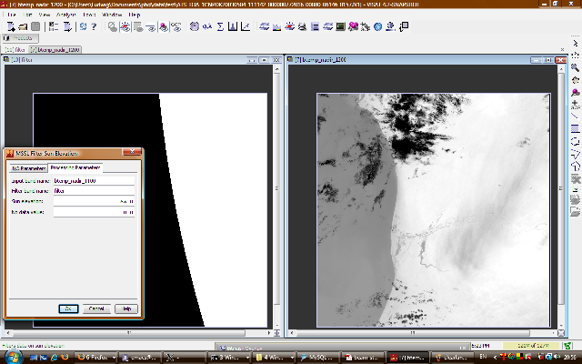
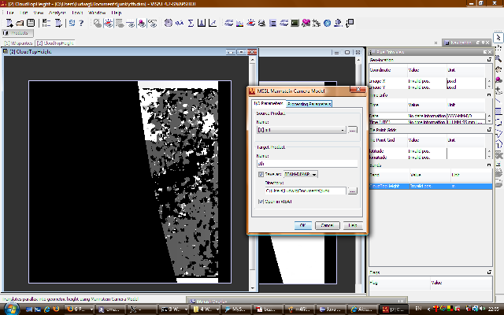

| Stereo-Photogrammetric ATSR Data Analysis | |
The complete chain for the retrieval of cloud-top height from ATSR data is combinded of four operator:

BEAM showing Image Normaliser operator and result image.

BEAM showing Sun Elevation operator and result image.

BEAM showing M4 Stereo Matcher operator with filter and result image.

BEAM showing Mannstein Camera Model operator with filter and result image.
Batch use requires an XML graph description for the processing chain, such as in this example: ctp.xml
Here the node with id Mannstein Model will force the computation of its source product, which is the output from node StereoMatching, which in turn will require the computation of the nodes Normalisation and SunElevationDataFilter. The processing parameters for each node are given and can easily be adapted.
The processing chain can then simply be executed by a call to the BEAM gpt command with an ATSR data source file. The -t parameter specifies the name of the output file, the -SatsrToaL1b parameter the ATSR input file:
gpt.sh ctp.xml -t output.dim -SatsrToaL1b=ATS_TOA_1POLRA20030401_024113_000062202015_00103_05668_0591.N1